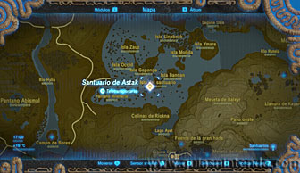
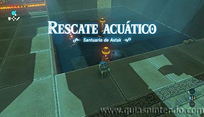
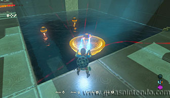
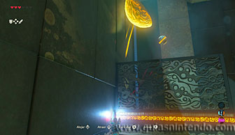
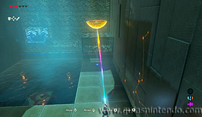
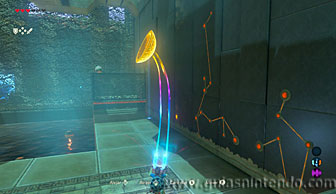
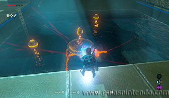
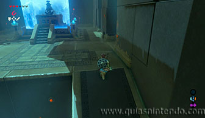
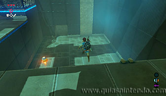

Puedes entrar en este santuario desde que llegas a la región de la torre de Lanayru. Está situado en una de las islas del archipiélago que hay en el Pantano de Lanayru.

Al entrar verás unas esferas flotando en una zona de agua. En el fondo de la misma zona hay una pieza de metal (tiene forma de media esfera hueca) que puedes levantar con el módulo del imán. El objetivo es sacarla del agua llevándote una de las esferas pequeñas dentro de ella. Tendrás que moverla con cuidado o la esfera caerá.

Una vez que está fuera del agua, llévala a la zona que está en la esquina tras una reja y allí empuja la pieza de metal contra la pared para lograr que la esfera de su interior caiga. Al caer la esfera abrirá la puerta que te impide avanzar a la siguiente sala.

En la siguiente sala vuelves a encontrar otra zona de agua con más esferas. Además, ahora hay un interruptor bajo el agua en el fondo. Usa de nuevo la pieza de metal para recoger una esfera (de esta sala o la anterior, da igual) y haz que caiga sobre el techo de la zona que hay en la esquina tras una reja.

Ahora sumerge la pieza de metal y suéltala sobre el interruptor. Así lograrás abrir el techo de la zona donde has depositado la esfera. Cuando esta caiga, la esfera activará un mecanismo que vacía el agua del santuario. Ahora solo debes bajar y seguir el camino para llegar al altar. Cuando llegues al altar del santuario podrás examinarlo para obtener un símbolo de valía.

Antes de irte, puedes regresar a la sala anterior y bajar a la zona donde estaban las esferas (también se ha vaciado de agua). Así puedes encontrar otro camino que te lleva al cofre de este santuario (contiene un mandoble zora).
